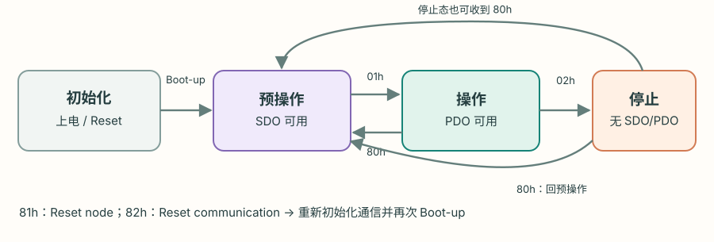
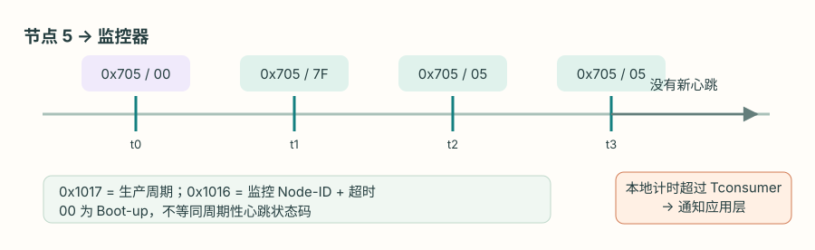

控制状态，不等于节点存活
从一次“看得见心跳却收不到过程数据”的故障出发，逐层理解 NMT、Boot-up、Heartbeat 和 Node Guarding。
为什么“节点在线”不代表“设备可以动作”？
监控器收到了节点 5 的 0x705 报文，执行器却没有响应过程数据。问题可能不在 CAN 线缆：该报文只说明某一时刻节点报告了自己的 NMT 状态。它可能处于预操作或停止状态，PDO 并不允许运行。
CANopen 把两件事拆开：NMT 命令控制通信状态；Boot-up / Heartbeat 报告状态与存活。这比“收得到帧就启动电机”的判断更可验证，也更安全。CiA 对 NMT 和预操作通信限制的说明。

NMT 四种状态，允许的服务并不相同
| 状态 | 常见状态字节 | 可用服务（经典 CANopen 的常见规则） |
|---|---|---|
| 初始化 | 不作为普通周期心跳状态 | 启动、自检、通信初始化；完成时发送 Boot-up，通常进入预操作 |
| 预操作 | 0x7F | NMT、SDO 与配置后的错误控制服务可用；PDO 禁用 |
| 操作 | 0x05 | 按配置运行 PDO、SDO 等服务 |
| 停止 | 0x04 | 保留 NMT、错误控制（如 Heartbeat / Node Guarding）；不运行 SDO/PDO |
特别注意：0x00 是Boot-up 报文的数据字节，表示设备完成一次启动/通信重启并准备进入预操作，不是“运行时每周期报告初始化中”。停止态并非什么 CAN 帧都不处理：它仍需接受 NMT 管理并可继续错误控制。不同设备可有扩展行为，最终以对象字典和设备文档为准。
两字节 NMT 命令如何改变状态
默认 NMT 命令使用 标准数据帧，CAN-ID 0x000、DLC 为 2。Byte 0 是命令，Byte 1 是目标节点 ID；0 表示广播。它的高仲裁优先级源于 CAN-ID 小，而不是“绝对不可能被其他报文抢占”的软件特权。
| Byte 0 | 命令 | 效果 |
|---|---|---|
01 | Start remote node | 进入 Operational（应满足设备自身准备条件） |
02 | Stop remote node | 进入 Stopped |
80 | Enter Pre-operational | 返回 Pre-operational |
81 | Reset node | 重启整个节点的相关初始化 |
82 | Reset communication | 重启 CANopen 通信部分并重新执行 Boot-up；不保证应用逻辑被全局复位 |
# 指定节点 5 进入操作态
CAN-ID = 0x000, DLC = 2, DATA = 01 05
# 广播进入预操作态
CAN-ID = 0x000, DLC = 2, DATA = 80 00
# 仅让节点 5 复位通信
CAN-ID = 0x000, DLC = 2, DATA = 82 05NMT 命令通常没有“逐条成功响应”。判断是否真正切换，应结合之后的 Heartbeat 状态、Boot-up 与设备业务对象，而不能只看 CAN 控制器发送成功。
Boot-up 与 Heartbeat 共用 CAN-ID，但含义不同
默认错误控制帧的 CAN-ID 为 0x700 + Node-ID，DLC 为 1。节点 5 会用 0x705 00 报告 Boot-up；启用 Heartbeat 后，可用 0x705 7F、0x705 05 或 0x705 04 周期上报状态。0x1017:00 是生产者心跳时间，单位毫秒；0 通常关闭周期心跳，不应据此推论设备无法发送 Boot-up。

消费者不是“等待所有节点一起上报”的单个定时器
0x1016 的每个有效条目独立监控一个生产者：其 32 位值通常按 bits 23…16 = 被监控 Node-ID、bits 15…0 = 超时毫秒数 编码；上位 8 bit 保留。假设要监控节点 5 的 600 ms 超时，条目值为 0x00050258。对象是否可写以及消费者何时开始计时，要查设备 EDS 和实现。
把消费者超时设为生产者周期的数倍是一种工程余量选择，不是 CiA 强制的固定倍数。应考虑抖动、最坏仲裁延迟、节点调度和故障检出时间。超时说明监控条件失败；停机或复位是应用安全策略。
旧式 Node Guarding 为什么不能与 Heartbeat 混为一谈
Node Guarding 的主站通过对 0x700 + Node-ID 发送 远程帧 RTR 发起查询；设备回复 1 字节，低 7 位为 NMT 状态、高位为每次应答翻转的 toggle 位。比如预操作回复可能在 0x7F 与 0xFF 之间交替。相应的 Guard Time / Life Time Factor 在 0x100C/0x100D 中配置（取决于设备支持）。
Heartbeat 则由生产者主动发送数据帧，没有这个 toggle 规则。二者共用默认标识符，不能把普通 Heartbeat 的 0x85 当作 Operational 心跳；对同一节点应根据设备能力选择一致的错误控制方案，避免监听器错误解析。Beckhoff 的 NMT / Guarding 说明。
交互实验：自己编码 NMT 与消费者超时
修改命令、节点和时间参数，观察报文与对象字典值如何改变。此演示只计算字段，不会向实际总线发帧。
节点管理与 Heartbeat 编码器
把管理与监控接成可观测的启动流程
- 节点 3（传感器）与节点 5（执行器）上电，分别等待
0x703 00与0x705 00Boot-up；没有收到应记录原因，不能假设节点准备好。 - 在预操作阶段通过 SDO 设置允许配置的参数，核对 EDS、心跳周期以及错误控制。
- 依业务依赖先启动传感器，验证心跳
0x703 05和有效过程数据，再判断是否允许执行器进入工作态。 - 节点 3 心跳超时后，主站记录故障并执行预定义安全策略；若使用
02 05停止节点 5，仍要确认执行器实际安全状态，不能把 NMT 命令当成安全认证。
为何发送 81 05 后没有立即得到“完成确认”？
NMT 不采用 SDO 式逐请求响应。复位后应观察 Boot-up 和后续状态，并设置合理的重启等待时间。
为什么偶尔收不到一次 Heartbeat 不能立刻判死机？
仲裁、调度和时钟误差都会影响间隔；应使用逐节点超时和应用层恢复策略，同时调查总线错误计数和负载。
资料与适用边界
本文讨论经典 CANopen 的默认预定义连接集；COB-ID、对象支持及启动行为可能因设备配置不同。示例时间仅用于教学，没有实测故障检出延迟。
- CAN in Automation — Network Management：NMT 状态机、Boot-up 与服务许可。
- CANopenNode — NMT and Heartbeat：命令、0x1017 与启动心跳的实现语义。
- Beckhoff — Network Management：Node Guarding toggle 与状态示例。
下一章从“节点是否可以通信”走向“怎样用 SDO 读写它的对象字典”。